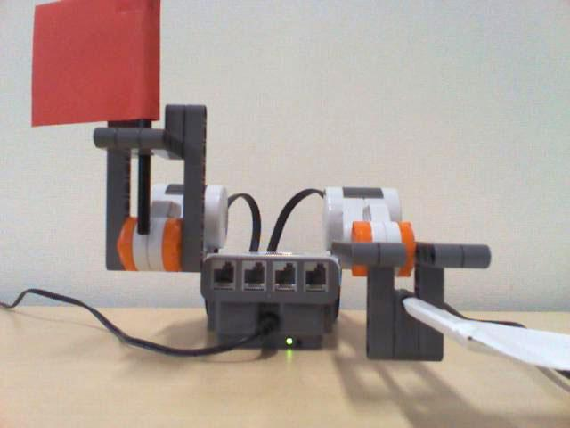
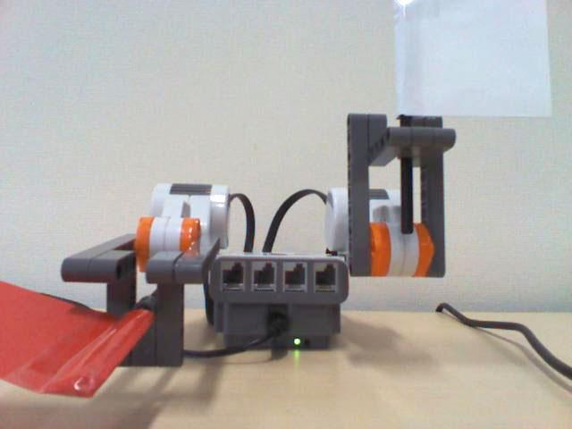

Picodeワークショップ～カラダをつかってロボットプログラミング！～Picodeワークショップ～カラダをつかってロボットプログラミング！～
Picodeワークショップ～カラダをつかってロボットプログラミング！～Picodeワークショップ～カラダをつかってロボットプログラミング！～MindstormsNXT nxt;
boolean flag = false;
void setup() {
nxt = new MindstormsNXT();
nxt.connect();
}
void draw() {
// もしNXTが動いている最中だったら何もしない
if (nxt.isActing()) {
return;
}
if (flag == true) {
// もしflagがtrueだったら
nxt.setPose());
flag = false;
}
else {
// それ以外(つまりflagがfalse)だったら
nxt.setPose());
flag = true;
}
}